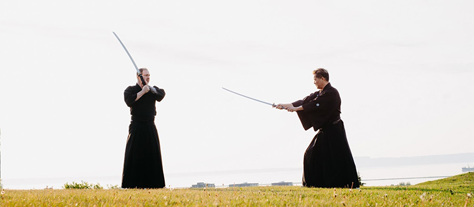
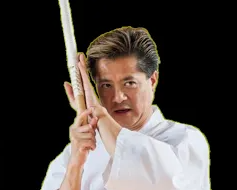

Welcome to the Tokumeikan website.
Our Sensei

Douglas Tong
Founder of Tokumeikan
Something about Doug
Who we are
Tokumeikan is one of the premier organizations in North America dedicated to the study and promotion of kenjutsu (classical Japanese swordsmanship). We specialize in the ancient art of Japanese swordfighting.
Created in 1994 from very humble beginnings, Tokumeikan has grown to now encompass branch dojos in the Greater Toronto Area, as well as affiliated dojos throughout North America (Canada, the US, Mexico) and Europe (Italy, Spain).
Tong Sensei said in his Welcome Address for the inaugural Tokumeikan Online Gasshuku in 2020:
“Wow. I suppose that one word sums up the unbelievable ride that has been Tokumeikan over the past 26 years. I can still vividly remember our first class in the tiny gymnasium of a small local public school in St. Catharines, Ontario with 2 students in 1994. Little did I know that by 2020, we would have affiliated dojos spread through North America, and breaking new ground in Europe. It is truly amazing. Many things have changed over those 26 years. From our humble beginnings practicing and building a base through the study of Katori Shinto Ryu, to our formative years where we embarked on a new adventure embracing the Yagyu style, it has always been done with a view to our continual growth as an organization and as students of budo. I guess that we really try to epitomize what our master Kajitsuka Sensei said about budo training: “Budo is like climbing a mountain. Everyone is climbing up the same mountain. However, you must realize that I am still myself going up this mountain.” We are still climbing that mountain but now we have many more friends with us on the journey. That one magnificent quote has stuck with me over the years and guides me to this day. The strength of our group is our people. I never forget that. We have grown because of our people: their energy, their enthusiasm, and their spirit. I welcome that enthusiasm and I hope that you will all see our spirit throughout this Gasshuku. A Gasshuku is a special training camp. In my mind, however, it is also a celebration of who we are and what we do. So, welcome everyone to our little celebration and I hope that you will enjoy this special opportunity to try out what we do. Cheers!”
Affiliation
We are an authorized group of practitioners that trains in Yagyu Shinkage Ryu kenjutsu (the Yagyu school of swordsmanship), one of Japan’s greatest schools of swordsmanship. The Yagyu were a family of daimyo (feudal lords) and were the swordsmanship teachers to the Tokugawa shoguns.
We are proud to be the first and only official study group (keiko-kai) in Canada for the Ohtsubo line of Yagyu Shinkage Ryu. We are also proud to be one of only two official study groups in North America. We are authorized by and follow the direction of Kajitsuka Yasushi Sensei.
Master Kajitsuka’s group Arakido is famous in Japan. They appear annually at all the major demonstrations of classical martial arts throughout Japan, such as the Nippon Budokan Embutaikai, the Asakusa Embutaikai, the Meiji Jingu Embutaikai, and the Kashima Jingu Embutaikai among many others.